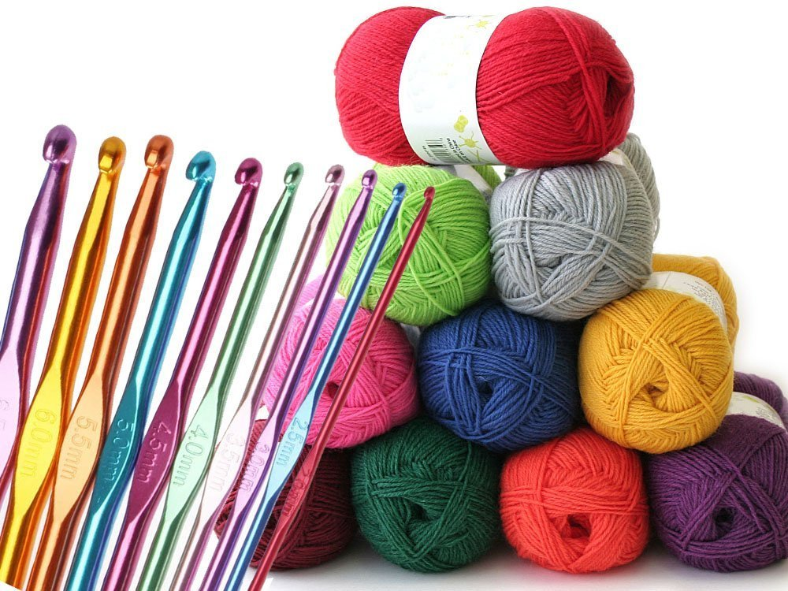

Zestawy do szydełkowania są doskonałym rozwiązaniem dla początkujących, ale też dla tych, którzy chcą spróbować nowych technik.
W takich zestawach znajdują się wszystkie niezbędne akcesoria, takie jak szydełka, włóczki, instrukcje i wzory.
Dzięki nim można szybko rozpocząć przygodę z szydełkowaniem i zaoszczędzić czas na szukaniu odpowiednich materiałów.
Zestawy do szydełkowania są często zaprojektowane tematycznie, na przykład do tworzenia zabawek, biżuterii czy dekoracji domowych,
co ułatwia wybór idealnego projektu.

Zestawy do szydełkowania to idealne rozwiązanie dla osób, które dopiero zaczynają
przygodę z tym rękodziełem. W zestawie znajdują się najczęściej szydełko w kilku rozmiarach, różne kolory włóczek,
instrukcje i wzory do wykonania. Dzięki temu można zacząć szydełkowanie od razu i nie trzeba myśleć o zakupie dodatkowych materiałów.
Zestawy do szydełkowania dla początkujących zazwyczaj pakowane są w praktyczne i poręczne etui, organizery lub torby,
chroniące elementy przed uszkodzeniem.